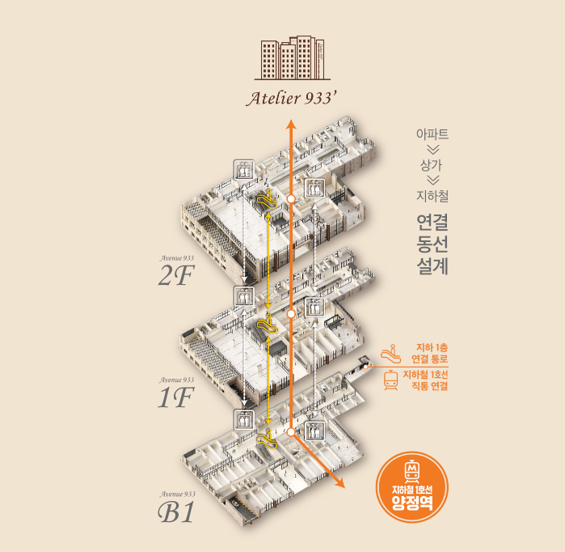

1. 같은 평수라도 전면 폭이 다르면 쓰임이 달라집니다
상가 호실 선택에서는 전용면적 숫자보다 실제로 사용할 수 있는 공간의 형태가 중요할 수 있습니다. 기둥 위치, 출입문 방향, 전면 폭, 코너 여부에 따라 같은 면적이라도 가구와 장비 배치, 고객 대기공간, 직원 작업공간이 달라질 수 있습니다.
현장에서는 고객이 접근하는 방향에서 점포가 어느 시점부터 보이는지, 간판을 어느 범위까지 활용할 수 있는지 확인해보는 것이 좋습니다. 도면에 실제 운영 배치를 그려보면 평수만 비교할 때 놓치기 쉬운 차이를 확인할 수 있습니다.
2. 코너 호실은 ‘두 면 노출’보다 실제 유동 방향을 봅니다
상가 호실 선택에서는 전용면적 숫자보다 실제로 사용할 수 있는 공간의 형태가 중요할 수 있습니다. 기둥 위치, 출입문 방향, 전면 폭, 코너 여부에 따라 같은 면적이라도 가구와 장비 배치, 고객 대기공간, 직원 작업공간이 달라질 수 있습니다.
현장에서는 고객이 접근하는 방향에서 점포가 어느 시점부터 보이는지, 간판을 어느 범위까지 활용할 수 있는지 확인해보는 것이 좋습니다. 도면에 실제 운영 배치를 그려보면 평수만 비교할 때 놓치기 쉬운 차이를 확인할 수 있습니다.

※ 본 사이트 내에 사용된 이미지는 소비자의 이해를 돕기 위해 참고용으로 제작된 것으로 실제 시공 시 다를 수 있습니다.
3. 에스컬레이터 바로 앞과 복도 안쪽은 업종별 차이가 있습니다
상가 호실 선택의 접근성을 볼 때는 지도상의 거리보다 고객이 실제로 도착하는 순서를 따라가 보는 것이 좋습니다. 지하철 연결부나 출입구에서 상가 내부로 들어온 뒤 층간 이동시설이 바로 보이는지, 희망 호실까지 방향을 쉽게 이해할 수 있는지가 체감 접근성에 영향을 줍니다.
처음 방문하는 고객과 이미 위치를 아는 재방문 고객의 경험도 다를 수 있습니다. 초진 환자나 예약 고객처럼 목적형 방문이 많은 업종이라면 안내 사인, 엘리베이터 하차 후 시야, 복도 이동거리까지 함께 확인해야 실제 이용 편의를 판단하기 쉽습니다.
4. 엘리베이터 접근은 목적형 업종에서 중요합니다
상가 호실 선택의 접근성을 볼 때는 지도상의 거리보다 고객이 실제로 도착하는 순서를 따라가 보는 것이 좋습니다. 지하철 연결부나 출입구에서 상가 내부로 들어온 뒤 층간 이동시설이 바로 보이는지, 희망 호실까지 방향을 쉽게 이해할 수 있는지가 체감 접근성에 영향을 줍니다.
처음 방문하는 고객과 이미 위치를 아는 재방문 고객의 경험도 다를 수 있습니다. 초진 환자나 예약 고객처럼 목적형 방문이 많은 업종이라면 안내 사인, 엘리베이터 하차 후 시야, 복도 이동거리까지 함께 확인해야 실제 이용 편의를 판단하기 쉽습니다.
5. 쾌적한 주차환경과 상가 연결을 함께 봅니다
상가 호실 선택에서 차량 방문 편의를 확인할 때는 주차 숫자보다 진입부터 호실 도착까지의 과정을 보는 편이 현실적입니다. 차량 진입이 어렵지 않은지, 주차 후 엘리베이터를 쉽게 찾을 수 있는지, 상가로 이동하는 과정이 복잡하지 않은지를 직접 확인하는 것이 좋습니다.
특히 병의원, 가족 단위 식음, 교육처럼 체류시간이 긴 업종은 귀가할 때의 이동도 중요합니다. 방문객이 다시 차량 위치를 찾기 쉬운지와 공용부 이동이 편한지를 함께 보면 실제 고객이 느끼는 주차 편의를 더 정확하게 비교할 수 있습니다.

※ 본 사이트 내에 사용된 이미지는 소비자의 이해를 돕기 위해 참고용으로 제작된 것으로 실제 시공 시 다를 수 있습니다.
6. 급배수·전기·배기 조건은 향후 업종 선택폭을 좌우할 수 있습니다
상가 호실 선택의 활용 범위는 설비 조건에 따라 달라질 수 있습니다. 급배수 위치와 전기 용량, 환기·배기 방식, 실외기 설치 가능 범위를 먼저 확인하면 희망 업종이 실제로 들어갈 수 있는지 판단하기 쉬워집니다.
설비가 부족한 상태에서 인테리어를 시작하면 추가 공사비와 일정 지연이 발생할 수 있습니다. 계약 전에는 현재 제공되는 조건과 임차인 공사 범위를 구분하고, 필요한 증설이 가능한지도 함께 확인하는 것이 좋습니다.
7. 간판 노출은 ‘설치 가능 여부’까지 확인해야 합니다
상가 호실 선택에서는 전용면적 숫자보다 실제로 사용할 수 있는 공간의 형태가 중요할 수 있습니다. 기둥 위치, 출입문 방향, 전면 폭, 코너 여부에 따라 같은 면적이라도 가구와 장비 배치, 고객 대기공간, 직원 작업공간이 달라질 수 있습니다.
현장에서는 고객이 접근하는 방향에서 점포가 어느 시점부터 보이는지, 간판을 어느 범위까지 활용할 수 있는지 확인해보는 것이 좋습니다. 도면에 실제 운영 배치를 그려보면 평수만 비교할 때 놓치기 쉬운 차이를 확인할 수 있습니다.
8. 좋은 호실은 내 목적에 따라 달라집니다
상가 호실 선택에서는 전용면적 숫자보다 실제로 사용할 수 있는 공간의 형태가 중요할 수 있습니다. 기둥 위치, 출입문 방향, 전면 폭, 코너 여부에 따라 같은 면적이라도 가구와 장비 배치, 고객 대기공간, 직원 작업공간이 달라질 수 있습니다.
현장에서는 고객이 접근하는 방향에서 점포가 어느 시점부터 보이는지, 간판을 어느 범위까지 활용할 수 있는지 확인해보는 것이 좋습니다. 도면에 실제 운영 배치를 그려보면 평수만 비교할 때 놓치기 쉬운 차이를 확인할 수 있습니다.

※ 본 사이트 내에 사용된 이미지는 소비자의 이해를 돕기 위해 참고용으로 제작된 것으로 실제 시공 시 다를 수 있습니다.